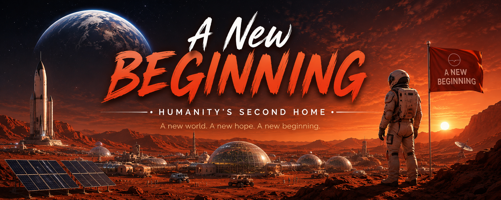
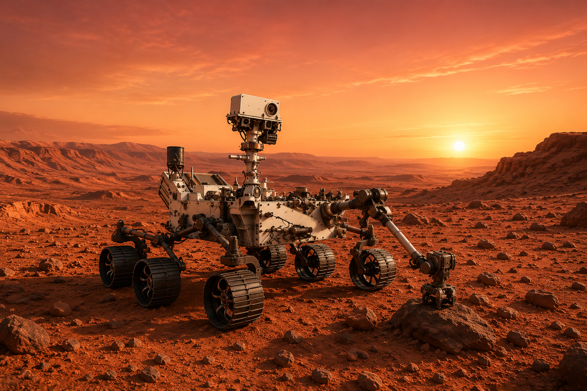

Mars is often called the Red Planet because of its reddish surface, caused by iron minerals in its soil. It is the fourth planet from the Sun and has a thin atmosphere made mostly s carbon dioxide. Mars is cold, dry, and covered with mountains, valleys, craters, and huge dust storms. Scientists are studying Mars because it may have had liquid water in the past, and future missions could one day help humans explore and possibly live there. For humanity, Mars represents more than another planet—it could become a new beginning and a second home for future generations.
